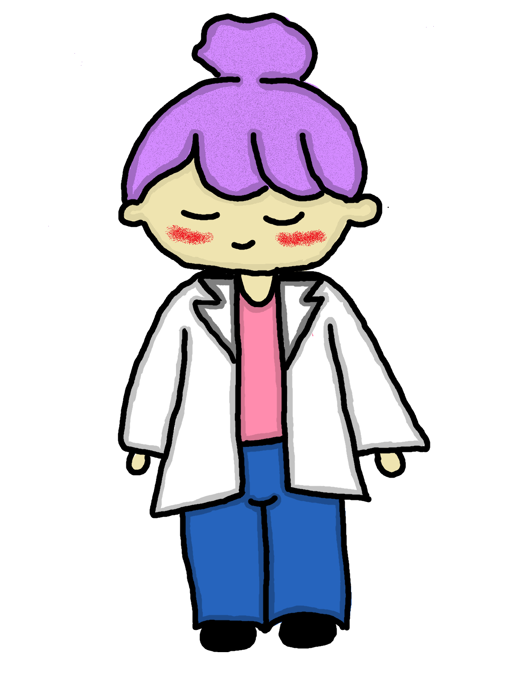
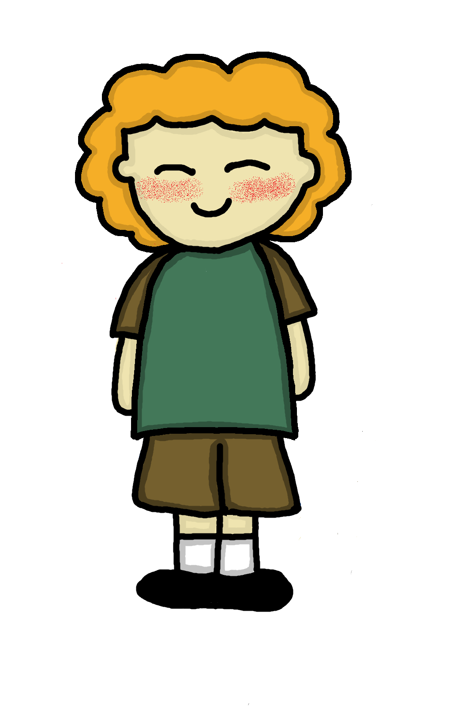
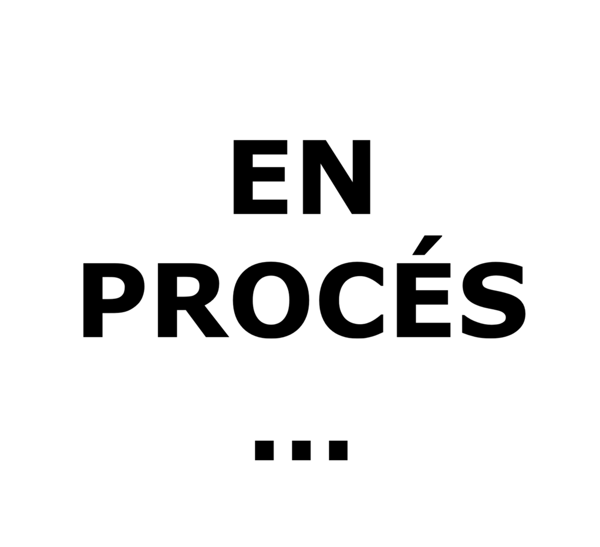

UNIVERS ARITHMÓS
Projecte d'Investigació i Descobertes

CELILA
Hola, sóc la Celila, científica del projecte, sóc la encarregada de conèixer que hi ha darrera dels números.

LEO
Hola, sóc en Leo, l'explorador del projecte, sóc qui aplica el coneixement a la vida real.

SECRETARIA
Espai per descobrir el que hi ha darrera del projecte Arithmós.